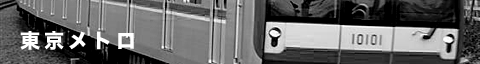

１. 西 武 ＆ 秩 鉄 写 真 館
１番線は西武＆秩父鉄道写真館です。現在、東京メトロも１００００系のみ暫定公開を開始しました。

戻る
トップに戻る
COPYRIGHT (C) YOSHINOBU SEIBU STATION ALL RIGHTS RESERVED. Designd by YUMOTO

 COPYRIGHT (C) YOSHINOBU SEIBU STATION ALL RIGHTS RESERVED. Designd by YUMOTO
COPYRIGHT (C) YOSHINOBU SEIBU STATION ALL RIGHTS RESERVED. Designd by YUMOTO